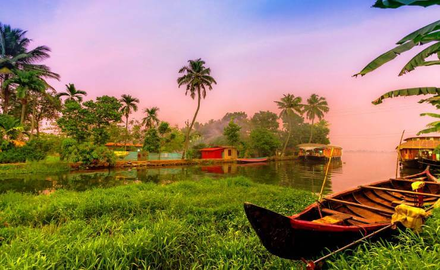
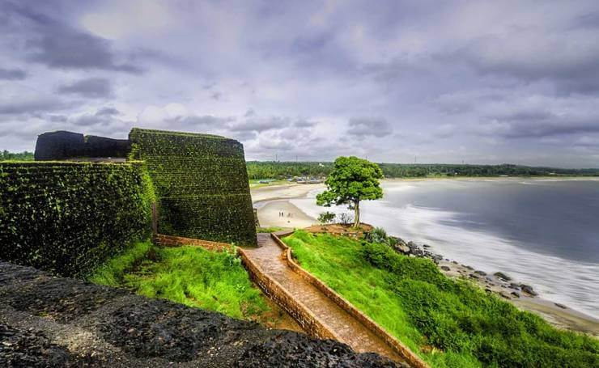
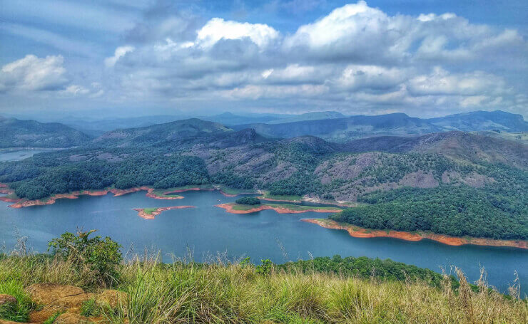
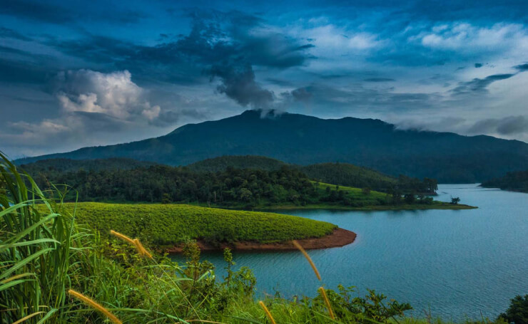
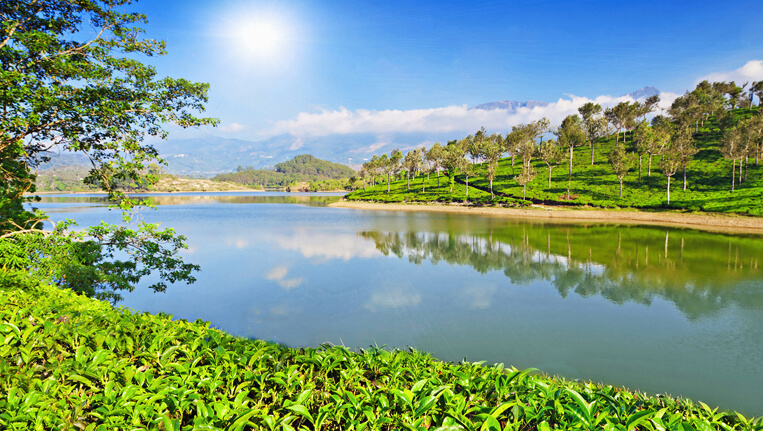

Top Destinations

Alappuzha – Delightful Venice of the East

Bekal – Offbeat Gem of Kerala

Idukki – Forest Paradise

Wayanad – Sooth your eyes in the serenity of Wayanad

Munnar – Blissful Heaven of Kerala